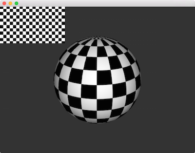

Textures
Images in OpenGL generally take the form of textures, and Cinder exposes this functionality through the class gl::Texture2d and its siblings. Let's look at a basic example:
class BasicApp : public App {
public:
void setup() override;
void draw() override;
gl::Texture2dRef mTex;
};
void BasicApp::setup()
{
auto img = loadImage( loadAsset( "clouds.jpg" ) );
mTex = gl::Texture2d::create( img );
}
void BasicApp::draw()
{
gl::clear();
gl::draw( mTex );
}
We're using an image from Trey Ratcliff that's saved in our application's assets directory as "clouds.jpg". We call loadImage() using this asset and then pass the result to the variant of gl::Texture2d::create() which accepts an ImageSource.
Besides simply drawing a texture, we often want to apply one (or more) to the vertices of a 2D or 3D model - a process known as texturemapping. Let's look at a simple example of this in Cinder:
class BasicApp : public App {
public:
void setup() override;
void draw() override;
CameraPersp mCam;
gl::BatchRef mSphere;
gl::TextureRef mTexture;
gl::GlslProgRef mGlsl;
};
void BasicApp::setup()
{
mCam.lookAt( vec3( 3, 2, 4 ), vec3( 0 ) );
auto img = loadImage( loadAsset( "checkerboard.png" ) );
mTexture = gl::Texture::create( img );
mTexture->bind();
auto shader = gl::ShaderDef().texture().lambert();
mGlsl = gl::getStockShader( shader );
auto sphere = geom::Sphere().subdivisions( 50 );
mSphere = gl::Batch::create( sphere, mGlsl );
gl::enableDepthWrite();
gl::enableDepthRead();
}
void BasicApp::draw()
{
gl::clear( Color( 0.2f, 0.2f, 0.2f ) );
gl::setMatrices( mCam );
mSphere->draw();
// draw the texture itself in the upper right corner
gl::setMatricesWindow( getWindowSize() );
Rectf drawRect( 0, 0, mTexture->getWidth() / 3,
mTexture->getHeight() / 3 );
gl::draw( mTexture, drawRect );
}

In this example we load the texture from a file called checkerboard.png, similar to the previous example. However in this case, we're setting up a gl::GlslProg from a gl::ShaderDef with both lambert() and texture() applied. Another key distinction is that we're calling the bind() method on mTexture. Binding a texture is simply making it the active texture. We do this from setup() because we only ever bind one texture. In the draw() method we draw the sphere by calling mSphere->draw(). Finally, we draw the texture itself for illustration purposes. Notice that before we do so, we use gl::setMatricesWindow() to restore our View and Perspective matrices to the window-aligned defaults. Also note that we're using the gl::draw() variant that accepts a Rectf which the texture is mapped to.